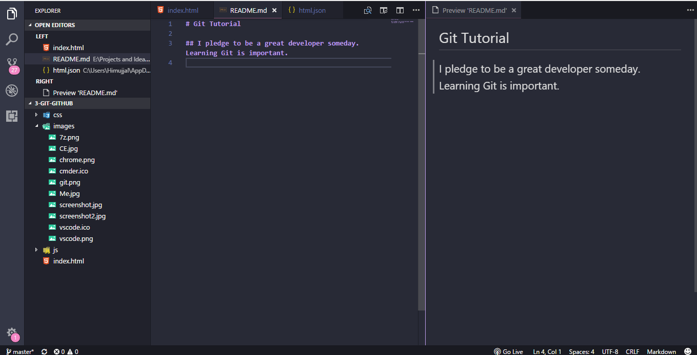

We shall now see how we can use Github to save our files or programs over the internet or popularly called Cloud
Github is an online platform where we can store all our code and files in the cloud and download them to our local computer. Remember we created a Github Account in the very first lesson.
From now on we will save all our files that we create to Github. We will also see how to create a documentation.
For any kind of Help regarding Git and Github Lesson don't hesitate to ask them on The Code Empire Gitter Basics Help.
Developers use command line a lot and thus we will too. This will be a short introduction to using Command Line.
Click here to see basic Command Line instructionsTo open the command within any folder, just right click anywhere inside a folder and then select:
Let's make a folder for all our files we will create in Command Line:
Open Command Line using the instructions above and then type mkdir the-code-empire and press ENTER.
Congratulations! You just created a new folder named code-empire using
mkdir command.
As a programmer, we don't name our files and folder with spaces. This is very convenient
Keeping the command line open, now type cd the-code-empire and hit ENTER
That's it we navigated into the folder in command line. cd is for navigating
between folders.
We can go back one folder up using: cd ..

Git is a super weapon to carry around for developers. It manages your coding projects and files and help them to be connected to the GitHub/BitBucket etc. It is a version control system. Helps you configure the version of your project.
Click to see what is a version.A version is the number/character given to a particular project/software/hardware which tells us how many times the creator have updated it.
With every update on a software/hardware comes new features. Every update increases the version no. of a project .
Git helps us in controlling changes and versions of our projects
Let’s Start using Git and make our first repository in Github
the-code-empire folder. Try it with command line.mkdir 1-git-turialcd 1-git-tutorial4. Next type git init
There you go. A new Git repository is created.
In Github and Git every project is called as repository.
1-git-tutorial is our first repository/project
Let us start with Documentation using a special writing format named Markdown
Every project we make needs a description. A description about what the project is about, how to use it and how to install the project. This description is called documentation
Go down to see how to write a Markdown file and document our 1-git-tutorial repository.Let's write a new markdown file and document our 1-git-tutorial project
Most of the documentation is written in a file named README.md which is then kept at the root of the repository/project. This README.md is used to know about the project. So write it nicely!
Go down to the next slide1. Inside the folder in the window, right click anywhere and then click on Open with Code. This will open the repository in Visual Studio Code.
2. Then right click on the Explorer Pane of VS Codea and click New File
3. Rename the file as README.md. .md basically represents a markdown file.
4. The File will spring on the Right Side. Simply write the following on the Right Pane:
# The Code Empire Git Tutorial
5. Press Cntrl + S to save your file.
6. To preview how it looks like simply press. Ctrl + K. Release the Ctrl
V.
Go down to see the final Preview
On the right is a screen with the letters The Code Empire Git Tutorial written in large format.
When we wrote # The Code Empire Git Tutorial it basically converted
all the contents after # to a large size
Similarly adding ## or ### will change it to
further smaller size.
Try it out!
Let's add some more text to the documentation.
Add the following to the README.md file on the right window.
# The Code Empire Git Tutorial
## Writing a documentation with Markdown
I did the following in this tutorial:
1. Making a markdown.
2. Uploading this repo on Github.
And then save the file with Ctrl + S
The file is ready to be uploaded to Github now. Let's do it!
Hit Right Arrow to navigate to Next SlideLet's Create a new Github Repository.
Congratulations! You just created a new Github repository. Let's upload our files now.
git add .
git commit -m "Your message for this upload ( Give anything here ) "
git remote add origin (Paste_your_url_here )
git push origin master
git add .: This basically reviews all the files that are to updated.git commit -m "": This says I have made the files and nowI am ready to uploadgit remote add origin ...: This connects your local repo to your github repo. Just connects not upload.git push origin master: This uploads your files to Github. Remembering all those command line commands is a pain. Let's use the Git GUI software for uploading to Github.
1-git-tutorial simply right click and select Git GUI hereStep 3, 4 & 5:

Step 6 :

If you have done the previous task then do this exercise:
# The Code Empire HTML & CSS Tutorial to the new README.md fileIf you are facing any problems with these Git and Github tutorial please as them onThe Code Empire Gitter Basics Help. Ask your queries there.
Now we will see how to create a website using HTML & CSS.
That is all for today. Let's start Day 3 and make our first Website.
Click HERE for our next lesson
Click HERE for our the course map